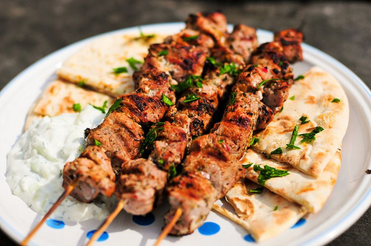

Pork Souvlaki

Description
Seasoned bits of pork or lamb are allowed to season in a Mediterranean marinade for as long as you can stand it!
Wonderful with rice and cucumber and tomato salad. Serve with lemon slices and chopped parsley
Ingredients
- 2 pounds pork tenderloin, cut into 1 1/2-inch cubes
- 1/2 cup olive oil
- 1/2 cup dry white wine
- 1 lemon, juiced
- 2 cloves garlic, chopped
- 2 teaspoons dried oregano
- salt and ground black pepper to taste
- 3 bay leaves, broke into pieces, or more to taste
Steps
- Place pork tenderloin cubes into a gallon-sized resealable bag.
- Stir olive oil, dry white wine, lemon juice, garlic, oregano, salt, and pepper together in
a bowl. Pour over pork in the bag and mix well.
- Let pork marinate in the refrigerator for at least 1 day, up to 5 days.
- Remove pork cubes from marinade and trhead onto metal skewers. Place bay leaf pieces
between meat cubes.
- Preheat an outdoor grill for medium heat and ligtly oil the grate.
- Arrange skewers on the preheated grill. Turn the kabobs and baste with marinade
frequently for the first 10 minutes of cooking, then discard marinade. Cook about 5
minutes longer, until pork is cooked through and juices run clear.